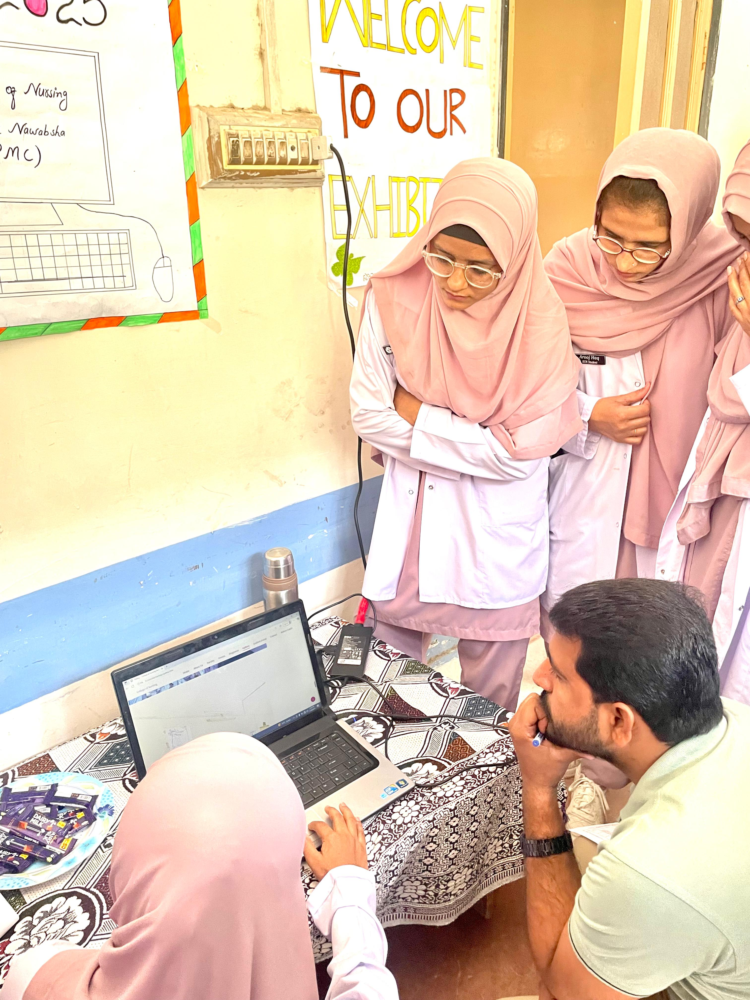
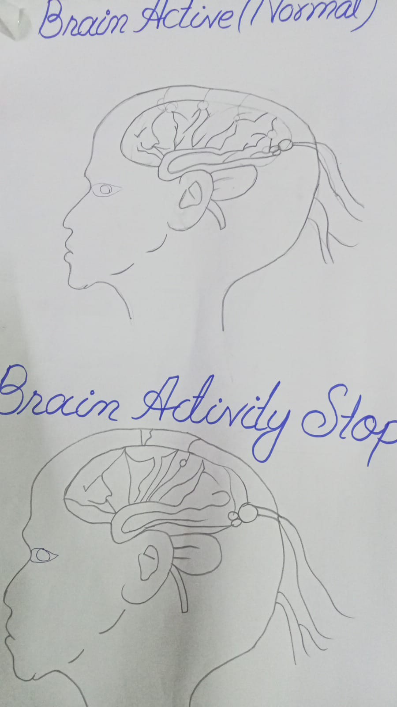
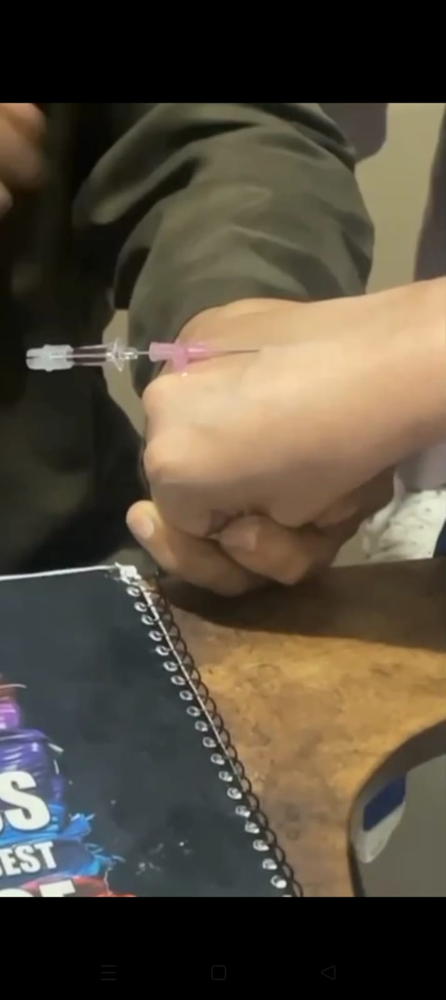
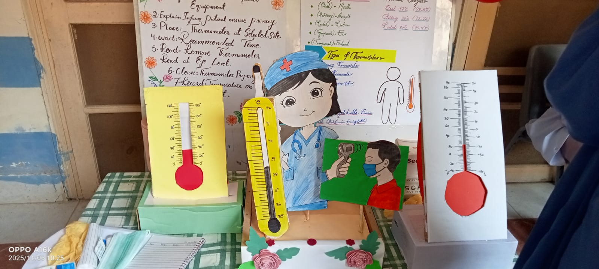

College of Nursing Female Nawabshah
Misbha Qazi
|
A premium academic digital portfolio presenting FON 2 learning, nursing skills, clinical experience, professional growth, and semester achievements.
Student Profile
About Me
Professional academic identity, submission information, and nursing career direction.

Misbha Qazi
2nd Semester Nursing Student
To become a highly skilled and compassionate professional nurse and contribute positively to healthcare services.
Academic Structure
Curriculum
Core learning areas for foundational nursing education and professional growth.
FON 2 Learning
Foundational nursing concepts, practical care principles, clinical behavior, and patient-centered practice.
Academic Progress
Structured coursework supported by presentations, clinical observations, reflection, and learning objectives.
Curriculum PDF
Official curriculum resource for reference and academic documentation.
Open Curriculum PDFClinical Capability
Nursing Skills
Skill-based presentation work with professional progress indicators.
Patient Care Skills
Open Presentation
Vital Signs Practice
Open Presentation
Infection Control
Open Presentation
Communication & Teamwork
Open Presentation
Learning Direction
Learning Objectives
FON 2 Chapters
PPT Presentations
Premium academic presentation gallery with quick access to all chapter files.
Clinical Learning
Clinical Experience
Ward Duties
Understanding ward routines, discipline, patient support, and documentation habits.
Patient Observation
Monitoring patient condition, comfort, symptoms, and important clinical signs.
Patient Care
Learning compassionate care, hygiene support, safety, and dignity in practice.
Clinical Procedures
Observing and practicing essential procedure preparation under supervision.
Nursing Ethics
Building professional conduct, confidentiality, respect, and accountability.
Communication Skills
Improving interaction with patients, classmates, instructors, and healthcare teams.
Teamwork
Developing collaboration, responsibility sharing, and supportive clinical behavior.
Professional Nursing Practice
Connecting theory with respectful, safe, and competent care in clinical settings.
Achievements
Certificates
Academic Certificate
PlaceholderClinical Participation
PlaceholderWorkshop Certificate
PlaceholderReflection
This course enhanced my clinical knowledge, communication skills, confidence, patient care abilities, and professional understanding of nursing practices. It helped me improve practical healthcare skills and develop professional behavior in clinical settings.
PDF Library
PDF Resources

NANDA & NCP PDF
Professional nursing diagnosis and nursing care plan resource for academic study.
Open NANDA & NCP PDFResearch Library
Research Articles
Research Article 1
Open ArticleResearch Article 2
Open ArticleProfessional Care Planning
Nursing Care Plan (NCP)
Nursing Care Plan Document
A premium academic NCP document presenting structured patient assessment, nursing diagnosis, care planning, interventions, and professional nursing evaluation.
Open Nursing Care PlanPortfolio Gallery
Gallery

Clinical Activities
Academic EventsConclusion
This digital portfolio reflects my academic progress, nursing knowledge, clinical learning, professional development, and practical experiences during the semester.
Connect